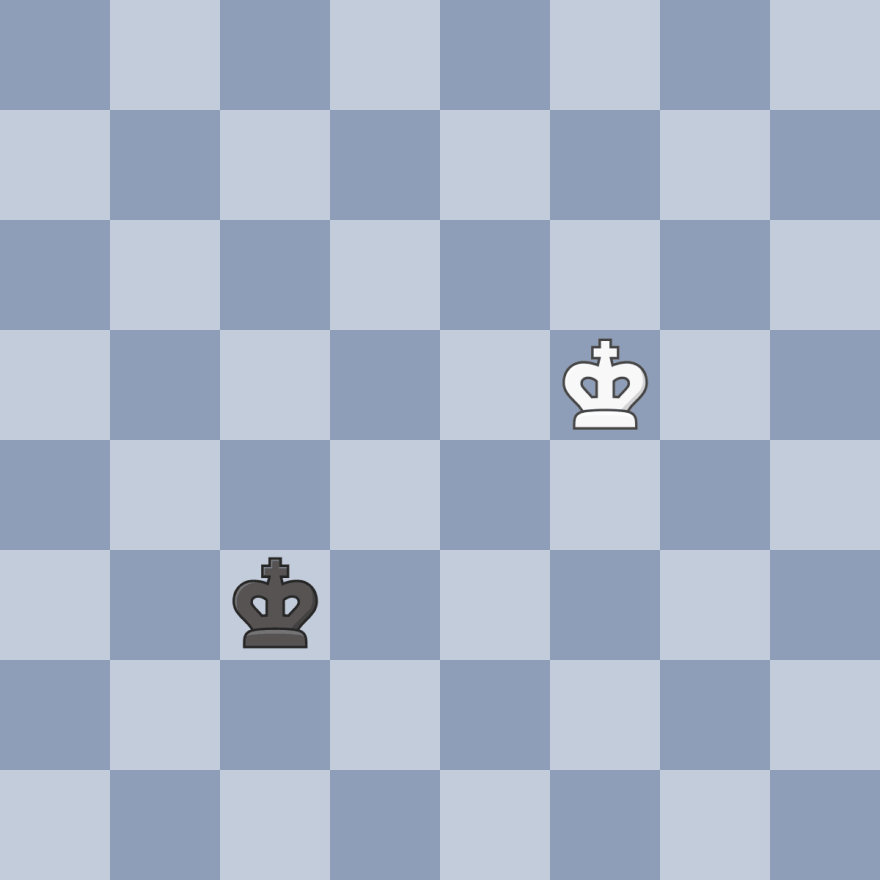

Learn the AZ of chess!
A beginner to chess?
Learn basics of chess piece movements,
openings, castling, middle game, end games, checks, checkmates and en-passant.
Before starting to play, lets take a look on how each piece moves and the board.
There are 6 distinct pieces in chess.
- First we have the pawn there are total 8 pawns for each player so total of 16 pawn on the board
- The rook - Its an important piece which has 5 points and there 2 rooks for each player.
- The bishop - Its also a powerful piece and has 3 points, each player has 2 bishops on dark squared and light sqauared
- The kight (horsey) - This piece comes with an advantage to jump over other pieces we will see how below there are 2 horses for each player each has 3 points
- The Queen - the most powerful piece with 9 points each player has one queen at the start
- The King - The piece on which the whole game is actually played
Let's take a look at the board.
The board contains 8 rows and 8 columns, rows are called as ranks and columns are called as files. There are 64 four squares in total.

 Pawn:
Pawn:
- The pawns are the most basic and fundamental chessmen in the entire game.
- It moves one step forward only, but if its the first move of pawn then, it can move 2 steps forward. It captures piece diagonally.
- The pawn has a special advantage over other piece i.e it can promote to either a Queen, Rook, Bishop or a Knight when it reaches the opposite end of the board.
- Also there is one special move called En Passant that the pwan can do, where when the pawn can capture opponent pawn which has its first move as 2 steps forward provided that both the pawn are besides each other.
- You can see how pawn moves and captures here ↗️

 Knight:
Knight:
- The knight is a piece worth 3 points
- It moves one square forward then one square diagonally left or right.
- The green highlighted square indicate the possible move for the knight.
- You can also start you game by placing the knights first, which can help you to take control of more squares than a pawn.

 Bishop:
Bishop:
- The bishop takes control of the diagonal squares, wherever it resides
- It is worth 3 points as knight.
- It can move anywhere on the diagonals it controls.
- Each player has two bishops one is the light sqaured and other is the dark-squared.
- The light squared bishop only controls and moves on light colored squares, and dark squared bishop controls and moves on dark squares.
- The green highlighted squares denote the possible squares each bishop can move.

 Rook:
Rook:
- The rook is a very powerful piece after the Queen.
- It takes control of the file and the rank where it is.
- It is worth 9 points.
- It has four possible directions to move

 Queen:
Queen:
- The Queen is the most powerful piece among all the pieces.
- Its a combination of a rook and a bishop
- It takes control of the file. the rank and the diagonals where it is.
- It is worth 10 points.
- It has eight possible move
- you can see how the queen moves in the above gif

 King:
King:
-

- The King is the most important piece of the game.
- The king moves 1 square in any direction as you can see here ⬅️
- The most important part of the chess is to protect the king and avoid getting a check
- Check is when you king is in danger that is opponents piece threats your king for capture but you can get out from a check by moving you king or blocking the check by other pieces